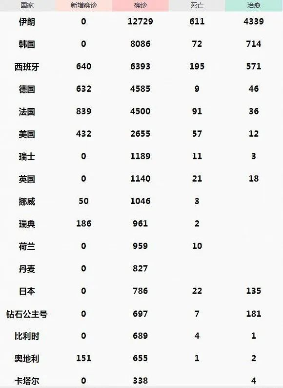

意大利累计确诊突破2500，伊朗暂时释放54200名监狱囚犯
原文链接 备份链接 图片来源：Kyodo News “ 全球新冠肺炎疫情播报，持续更新。 ” （本文持续更新中。文中段首所示时间为本文更新时间。） 0830【海军因新冠病毒的疑虑要求第六舰队自我隔离】 两名未具名美国海军官员透露，第六舰队 …
图片来源：Kyodo News
“
全球新冠肺炎疫情播报，持续更新。
”
（本文持续更新中，点击左下角阅读原文，实时跟踪国际疫情动态。文中段首所示时间为本文更新时间。）
全球
0800【全球新冠肺炎累计病例数已突破15万例】
据美国约翰斯·霍普金斯大学发布的实时统计数据，截至美国东部时间14日20时（北京时间15日8时），全球新冠肺炎累计病例数已突破15万例。
0800【全球疫情汇总】
据新浪实时统计，截至3月15日8点，除中国（包括港澳台地区）以外，海外新冠肺炎累计确诊74142例，死亡2604例，治愈8440例。

注：新增0表示当天暂未宣布数据。数据来源：新浪
0800【西班牙首相宣布全国实施“封城”措施】
西班牙首相桑切斯14日宣布，为遏制新冠肺炎疫情蔓延，西班牙即日起在全国范围内实施为期15天的“封城”措施。除工作、就医或购买生活必需品等特定情况外，全国范围内的民众禁止走出家门。
0800【西班牙首相桑切斯的妻子新冠病毒检测呈阳性】
0800【西班牙新冠肺炎确诊病例增至6393例】
截至当地时间14日晚间，西班牙全国新冠肺炎确诊病例累计达6393例，其中死亡195例，重症272例，治愈571例。
0800【意大利新增3497例确诊病例，新增死亡175例】
累计确诊21157例，其中死亡病例累计1441例。
0800【特朗普新冠病毒检测结果阴性】
美国白宫总统医生14日说，美国总统特朗普新冠病毒检测结果呈阴性。
0800【美国将英国和爱尔兰加入欧洲旅行禁令国家名单】
于美国东部时间3月16日0时生效。
0800【纽约出现首例新冠肺炎死亡病例】
死者为纽约市一名82岁女性。该女性于3月3日入院治疗，消息称她有呼吸道疾病、肺气肿等病史。
0800【墨西哥考虑关闭美墨边境“防止美国病毒传入”】
目前墨西哥共有26个确诊病例，无死亡病例。此前特朗普曾表示，防止疫情从墨西哥传入美国是美国加强移民管控政策的原因之一。墨西哥卫生官员对此回应”如果从技术角度谈控制疫情，我们该考虑的不是如何防止病毒从墨西哥传到美国。而是防止美国的病毒传到墨西哥。”
0800【斯洛文尼亚报告首例新冠肺炎死亡病例】
死者为一名老年男性，生前患有多种疾病。
0800【罗马尼亚将于下周进入国家紧急状态】
为防控疫情，罗马尼亚政府连日来采取了一系列严格措施，包括暂时关闭国内所有中小学校和幼儿园、暂停往返意大利的所有航班和陆路客运等。
0800【摩洛哥出现首位被确诊感染新冠病毒的大臣】
摩洛哥装备、运输、物流与水利部阿卜杜勒卡德尔⋅阿马拉（Abdelkader Amara）新冠病毒测试呈阳性。他近期刚刚结束对欧洲的访问回国，回国后出现极度疲劳和头疼等新冠肺炎症状。
0800【瑞典新增147例，累计961例】
而据瑞典公共卫生局消息，截止到3月14日14点，瑞典总计924例确诊病例，其中56%是男性。
0800【捷克新增48例，累计189例】
全国13个州和首都布拉格全部出现确诊病例，其中约有一半的患者集中在布拉格。此外，在奥洛穆茨市和布热茨拉夫市分别有一名医生被感染。
0800【塞尔维亚累计确诊46例，足协主席感染】
塞尔维亚足协当天宣布，足协主席斯拉维萨·科茨（Slavisa Kokez）新冠病毒检测结果呈阳性，目前他状况良好，正处于隔离状态。据悉，他是从米兰参加欧足联会议回来后确诊的。
0800【法国新增838例，累计4500例】
较前一天增长839例，新增死亡12例，累计死亡91例。
0800【塞舌尔首次确诊新冠肺炎患者】
这两名患者是从意大利返回塞舌尔的，目前已转移到Anse Royal医院隔离中心接受治疗，塞有关部门正在追踪密切接触人员。
0800【新增死亡1人，累计死亡2人】
0800【奥地利累计确诊655例，“方舱医院”登场】
奥地利共进行7467次新冠病毒检测，现有确诊病例655例，其中累计治愈6人，死亡1人。维也纳将一座发型展览馆改造成临时“方舱医院”，用于接收轻症患者。
0800【荷兰新增155例，累计确诊959例】
0800【英国新增342例，累计1140例】
新增10例死亡病例，累计死亡21例。
0800【累计确诊3795例，首都柏林等地禁止50人以上活动】
0800【希腊新增38例，累计确诊228例】
目前共有57人住院治疗，超过3400人接受过新冠病毒测试。
0800【埃及新增17例，累计确诊110例】
0800【以色列确诊病例增至178例，民众在“安息日”抢购】
在这178例病患中，三名患者处于危重状态，将近40000人正在家中隔离。14日（周六）是犹太人的安息日，根据当地习俗，以色列境内只有少数商店和超市开门营业，但由于对新冠肺炎病例急剧攀升的恐慌，大批民众涌进超市抢购。
0800【印度累计确诊84例，4000余名密接者观察中】
0800【累计确诊12729例，将进行生物防御演习】

原文链接 备份链接 图片来源：Kyodo News “ 全球新冠肺炎疫情播报，持续更新。 ” （本文持续更新中。文中段首所示时间为本文更新时间。） 0830【海军因新冠病毒的疑虑要求第六舰队自我隔离】 两名未具名美国海军官员透露，第六舰队 …
原文链接 备份链接 图片来源：Kyoto News “ 全球新冠肺炎疫情播报，持续更新。 ” 全球 0800【全球疫情汇总】 据新浪实时统计，截至3月9日8点，除中国（包括港澳台地区）以外，海外新冠肺炎累计确诊28854例，死亡702例， …
原文链接 备份链接 图片来源：Kyodo News （本文持续更新中。文中段首所示时间为本文更新时间。） 意大利 0800【意大利紧急封锁伦巴第大区及11个省】 法令将持续到4月3日。 0800【单日新增1247例意大利新冠肺炎确诊病例升 …
原文链接 备份链接 图片来源：Kyodo News 作者：潘金花 “ 全球新冠肺炎疫情播报，持续更新。 ” 世卫组织 0800【中国境外共78个国家累计确诊新冠肺炎17637例】 据世卫组织3月5日发布的每日数据，截至欧洲中部时间3月5 …
原文链接 备份链接 洛杉矶宣布进入紧急状态。来源：推特 （本文持续更新中。文中段首所示时间为本文更新时间。） 意大利 0800【新增587例确诊病例，累计确诊3089例】 根据当地时间3月4日18时意大利卫生部公布的最近数据，现有患 …